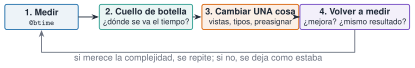
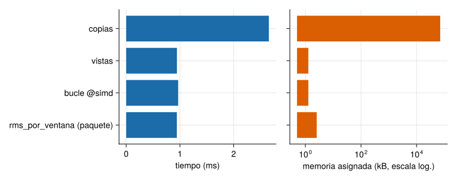

Julia presume de ser rápida, pero lo es si se escribe de la forma en que el compilador sabe optimizar. Procesar meses de registros de un puente exige que el análisis de un día no tarde minutos ni se coma la memoria. Esta unidad enseña a medir (qué tarda y cuánta memoria usa un código), a reconocer los tres causantes habituales de lentitud (variables globales, tipos inestables y asignaciones innecesarias) y a corregirlos de uno en uno, comprobando cada vez que el resultado sigue siendo el mismo.
NotaCómo se lee esta unidad
Tiempo orientativo: 90 minutos. Objetivos (4), teoría en cuatro píldoras (18), práctica guiada (40), «Pídeselo a Claude» (12), ejercicios (14) y cierre (2). Los tiempos que se muestran son los de la máquina en la que se compiló la página: en la tuya saldrán otros. Lo que importa son las razones entre ellos y las asignaciones de memoria, que sí son reproducibles.
Objetivos y prerrequisitos
Objetivos. Al terminar esta unidad sabrás:
medir tiempo y asignaciones con @btime y @belapsed, e interpretar el resultado;
detectar una función con tipos inestables y una variable global que ralentiza, y corregirlas;
reducir asignaciones con vistas (@views), preasignación y operaciones en sitio;
aplicar el ciclo medir → cambiar una cosa → medir y decidir si la mejora merece la complejidad;
estimar el coste de procesar un mes de registros a partir de un día.
Prerrequisitos. El curso no los impone en el temario; conviene J1.3 a J1.5 (tipos, funciones y arrays).
Reparto con otras unidades. Aquí se mide y se corrige lo básico. El análisis de algoritmos y la complejidad están en J3.9 y el paralelismo queda fuera de este curso.
Teoría breve
NotaUn poco de historia: «la optimización prematura»
La frase más citada sobre rendimiento es de Donald Knuth, en un artículo de 1974 sobre el uso de go to: conviene olvidarse de las pequeñas eficiencias «el 97 % del tiempo», pero no dejar pasar el 3 % crítico (Knuth 1974). Citada sin el resto, se usa a veces como excusa para no medir. Lo que defiende, en realidad, es lo que hace esta unidad: medir primero y optimizar solo el trozo del código que de verdad pesa.
Fuente: Knuth (1974) (Knuth 1974); la frase y su contexto se han comprobado en fuentes secundarias (no en el original), consultadas el 26-10-2026.
J3.1.1 Medir antes de optimizar
El macro @time mide una ejecución, pero la primera llamada incluye la compilación, así que hay que llamar dos veces o usar BenchmarkTools: @btime repite la medida y da el mínimo, y @belapsed devuelve el tiempo en segundos. Un detalle importante: las variables globales se interpolan con $ para que la medida no pague el coste de acceder a un global (Performance Tips 2026).
usingBenchmarkTools@btimesum(abs2, $x) # tiempo mínimo y asignacionest =@belapsedsum(abs2, $x) # tiempo en segundos (para guardarlo)@allocatedsum(abs2, x) # bytes asignados
Las asignaciones (bytes) son tan informativas como el tiempo y no dependen del ordenador: una asignación inesperada casi siempre indica un problema (Performance Tips 2026).
La primera vez que se ejecuta una función en una sesión de Julia incluye el tiempo de compilarla, por lo que no es representativa.
Verdadero. Por eso se mide la segunda llamada o se usa BenchmarkTools, que repite y descarta la compilación.
J3.1.2 Estabilidad de tipos
Una función es estable en tipos si el compilador puede deducir el tipo de lo que devuelve (y de sus variables internas) a partir de los tipos de los argumentos. En el caso siguiente, s = 0 empieza siendo un Int y pasa a Float64 dentro del bucle:
Ver el código
functionsuma_inestable(x); s =0; for v in x; s += v; end; s; endfunctionsuma_estable(x); s =0.0; for v in x; s += v; end; s; endx =rand(MersenneTwister(1), 10^6)(tipos_inestable =Base.return_types(suma_inestable, (Vector{Float64},)), tipos_estable =Base.return_types(suma_estable, (Vector{Float64},)), t_inestable_ms =round(1e3*@belapsed(suma_inestable($x)), digits=3), t_estable_ms =round(1e3*@belapsed(suma_estable($x)), digits=3))
El tipo devuelto por la primera es Union{Float64, Int64}: inestable, y aun así, no es más lenta. Julia sabe manejar eficientemente uniones pequeñas de tipos, así que no toda inestabilidad cuesta lo mismo. Lo que sí cuesta es perder por completo la información de tipos, por ejemplo con un contenedor Vector{Any}:
Con Vector{Any} cada elemento es un objeto en memoria, hay que comprobar su tipo en cada iteración y se asigna memoria en el bucle: unas 20 veces más lento en esta medida (19). La herramienta para ver estos problemas es @code_warntype f(x), que marca en rojo los tipos no concretos; Base.return_types da la misma información en una línea.
AdvertenciaErrores frecuentes
Construir un vector con [] y añadir elementos de tipos distintos da un Vector{Any}. Para que sea de un tipo concreto, se declara: Float64[], o Vector{Float64}(undef, n). Y las comprensiones o map sobre colecciones heterogéneas heredan el problema.
La función pos(x) = x < 0 ? 0 : x devuelve un Int o el tipo de x. ¿Cómo la harías estable?
Con zero(x): pos(x) = x < 0 ? zero(x) : x, que devuelve siempre el mismo tipo que x(Performance Tips 2026).
J3.1.3 Variables globales
Una variable global no constante puede cambiar de valor y de tipo en cualquier momento, así que el compilador no puede asumir nada sobre ella y el código que la usa es lento. La solución es pasar los datos como argumentos a una función (o, si es de verdad una constante, declararla const) (Performance Tips 2026):
Es el motivo por el que en J1.3 se recomendaba meter los cálculos en funciones: no solo evita el problema de ámbito, sino que es mucho más rápido.
Declarar los datos como variables globales en el script es una buena práctica, porque así todas las funciones pueden usarlos sin pasarlos como argumentos.
Falso. Las globales no constantes ralentizan el código y dificultan entenderlo y probarlo. Se pasan como argumentos.
J3.1.4 Asignaciones: copias, vistas y preasignación
Cada vez que se escribe x[2:end] se copia el trozo, y cada operación con vectores crea otro vector temporal. Con un registro largo eso son muchos megabytes y mucho tiempo en el recolector de basura. Tres herramientas lo reducen: las vistas (@views, que no copian), las operaciones en sitio (.=) y la preasignación del resultado. Veamos cuatro versiones de la misma cuenta, \(\sum_i (x_i-x_{i-1})^2\):
Ver el código
d1(x) =sum(abs2, x[2:end] .- x[1:end-1]) # copias y temporalesd2(x) =sum(abs2, @views x[2:end] .- x[1:end-1]) # vistasfunctiond3(x); s =0.0; for i in2:length(x); s +=abs2(x[i] - x[i-1]); end; s; end# buclefunctiond4(x); s =0.0; @inbounds@simdfor i in2:length(x); s +=abs2(x[i] - x[i-1]); end; s; endversiones = [("cortes con copia", d1), ("vistas", d2), ("bucle", d3), ("bucle con `@simd`", d4)]res = [(nombre = n, bytes =@allocated(f(x)), ms =1e3*@belapsed($f($x))) for (n, f) in versiones](mismo_resultado =all(f(x) ≈d1(x) for (_, f) in versiones),)
(mismo_resultado = true,)
Ver el código
filas = ["| $(r.nombre) | $(coma(r.bytes /1e6, d=1)) | $(coma(r.ms, d=2)) | $(coma(res[1].ms / r.ms, d=1)) |" for r in res]println("| versión | memoria asignada (MB) | tiempo (ms) | aceleración |\n|---|---|---|---|\n"*join(filas, "\n"))
Tabla 1: Cuatro versiones de la misma suma sobre un vector de \(10^6\) elementos (máquina de compilación de la página).
versión
memoria asignada (MB)
tiempo (ms)
aceleración
cortes con copia
24,0
0,57
1,0
vistas
8,0
0,25
2,3
bucle
0,0
0,51
1,1
bucle con @simd
0,0
0,12
4,8
Lo que enseña la Tabla 1: las vistas reducen la memoria a un tercio; el bucle simple no asigna nada pero no es el más rápido (la suma en serie impide que el procesador la ejecute en paralelo con instrucciones vectoriales); con @simd (que autoriza a reordenar las sumas) sí, y es el mejor. No siempre gana lo que uno espera, y por eso se mide. Además, @simd y @inbounds hacen que el código sea menos seguro: solo se usan donde se ha medido que compensan y el resultado se ha verificado.
¿Cuántos bytes asigna la versión con bucle (d3) sobre un vector de \(10^6\) elementos?
Cero: el bucle solo usa una variable escalar (s) y no crea ningún vector temporal.
AdvertenciaErrores frecuentes
Optimizar sin medir (cambiar el código «porque debería ir más rápido»), optimizar varias cosas a la vez (y no saber cuál ayudó), no comprobar que el resultado sigue siendo el mismo, y dejar @inbounds en código que luego se llama con un índice fuera de rango (da resultados erróneos o cuelga Julia, en vez de un BoundsError).

Figura 1: El ciclo de optimización responsable: se mide, se localiza el cuello de botella, se cambia una sola cosa y se vuelve a medir, comprobando que el resultado no cambia.
Para saber más
Manual de Julia, Performance Tips(Performance Tips 2026) (en inglés): la referencia imprescindible.
Knuth, Donald E. 1974. «Structured Programming with go to Statements». ACM Computing Surveys.
Práctica guiada
Vamos a procesar un día de registros de un acelerómetro a 100 Hz (8,64 millones de muestras) y a calcular el RMS de cada tramo de 10 minutos con tres programas, y después a extrapolar al mes. Los datos son ruido gaussiano sintético con semilla fija: lo que importa es el coste, no la señal.
Paso 1. Tres implementaciones del mismo cálculo.
Ver el código
fs =100N =24*3600* fsy =randn(MersenneTwister(1), N)m =600* fs # muestras por tramo de 10 minrms_copias(y, m) = [sqrt(mean(abs2, y[(i-1)*m+1:i*m])) for i in1:length(y)÷m]rms_vistas(y, m) = [sqrt(mean(abs2, @view y[(i-1)*m+1:i*m])) for i in1:length(y)÷m]functionrms_simd(y, m) r =Vector{Float64}(undef, length(y) ÷ m)for i ineachindex(r) s =0.0@inbounds@simdfor k in (i-1)*m+1:i*m s +=abs2(y[k])end r[i] =sqrt(s / m)endreturn rend(tramos =length(y) ÷ m, mismo_resultado =rms_copias(y, m) ≈rms_vistas(y, m) ≈rms_simd(y, m) ≈rms_por_ventana(y, 100.0, 600.0)[2], memoria_del_registro_MB =round(Base.summarysize(y) /1e6, digits=1))
impl = [("copias", rms_copias), ("vistas", rms_vistas), ("bucle @simd", rms_simd), ("rms_por_ventana (paquete)", (y, m) ->rms_por_ventana(y, 100.0, 600.0))]med = [(nombre = n, bytes =@allocated(f(y, m)), ms =1e3*@belapsed($f($y, $m))) for (n, f) in impl](mediciones = med,)
(mediciones = [(nombre = "copias", bytes = 70789376, ms = 2.6553750000000003), (nombre = "vistas", bytes = 1280, ms = 0.9445410000000001), (nombre = "bucle @simd", bytes = 1280, ms = 0.967791), (nombre = "rms_por_ventana (paquete)", bytes = 2560, ms = 0.942375)],)
Ver el código
let nombres =reverse([r.nombre for r in med]) fig =Figure(size=(760, 300)) ax1 =Axis(fig[1, 1], xlabel="tiempo (ms)", yticks=(1:4, nombres))barplot!(ax1, 1:4, reverse([r.ms for r in med]), direction=:x, color=AZUL) ax2 =Axis(fig[1, 2], xlabel="memoria asignada (kB, escala log.)", xscale=log10, yticks=(1:4, fill("", 4)))barplot!(ax2, 1:4, reverse([max(r.bytes, 1000) /1e3 for r in med]), direction=:x, color=NARANJA, fillto=0.5) figend

Figura 2: Procesar un día de registros (8,64 millones de muestras) con cuatro implementaciones. Izquierda: tiempo. Derecha: memoria asignada (escala logarítmica; las versiones sin asignaciones aparecen en 1 kB). La versión con copias asigna tanta memoria como el propio registro.
Las tres versiones que no copian tardan lo mismo (alrededor de 1 ms: el límite es la velocidad de la memoria, no el cálculo) y la de copias tarda unas 2,6 veces más y asigna tanta memoria como el propio registro. En este caso, la implementación sencilla con vistas es tan buena como la optimizada con @simd, y mucho más fácil de leer: la mejor optimización puede ser no hacer ninguna más.
Paso 3. De un día a un mes. Una extrapolación lineal (el coste crece con el número de muestras) con los datos medidos. Lo que se vigila no es solo el tiempo: es la memoria.
Ver el código
dias =30mejor =argmin([r.ms for r in med]); peor =argmax([r.bytes for r in med])(memoria_de_30_dias_del_registro_GB =round(dias *Base.summarysize(y) /1e9, digits=2), basura_con_copias_GB =round(dias * med[peor].bytes /1e9, digits=2), basura_con_vistas_kB =round(dias * med[2].bytes /1e3, digits=1), tiempo_de_calculo_30_dias_s =round(dias * med[mejor].ms /1e3, digits=2))
El cálculo en sí es de centésimas de segundo para un mes (0,03 s); lo que pesa de verdad es la memoria y la lectura de los ficheros: un mes a 100 Hz en Float64 ocupa unos 2 GB, y la versión con copias genera, además, otros 2 GB de basura. La estrategia para registros de meses es procesar por días (o por tramos), sin cargar todo y sin copiar, y escribir solo los resultados (un RMS por tramo).
NotaIdea clave
Antes de optimizar: ¿se necesita? Si el análisis de un mes tarda unos segundos, no hay nada que optimizar. Si hay que hacerlo, se mide la memoria además del tiempo, se cambia una sola cosa por vez y se comprueba que el resultado es el mismo (aquí, con ≈ entre las cuatro versiones).
«Pídeselo a Claude»
TipPrompt
«Con Julia, --project=. y BenchmarkTools: escribe tres versiones de una función que calcule el RMS de tramos consecutivos de 60 000 muestras de un vector de randn (semilla 1, 8,64 millones de muestras): (1) con cortes que copian, (2) con @view, (3) con un bucle @inbounds @simd. Comprueba que las tres dan el mismo resultado con ≈, mide cada una con @belapsed y @allocated, y dime cuál es más rápida y cuál usa menos memoria. Antes de proponer una optimización, enséñame la medida que la justifica. No inventes cifras: si algo no sale, dilo.»
Verifica. (a) Que usa $ al interpolar variables en @belapsed. (b) Que las tres versiones dan el mismo resultado (≈). (c) Que la versión con copias asigna del orden de 70 MB y las otras del orden de un kilobyte. (d) Que no ha cambiado varias cosas a la vez ni ha dejado @inbounds sin comprobar los índices. (e) Que las conclusiones se basan en las medidas y no en lo que «debería» ocurrir.
Ejercicios
¿Cuántos megabytes ocupa en memoria el registro de un día (8,64 millones de Float64)?
8_640_000 * 8 bytes, es decir, \(69{,}12\cdot10^6\) bytes.
69,1 MB (Base.summarysize(y) / 1e6). Un mes ocupa unos 2,07 GB.
¿Cuántos tramos de 10 minutos tiene un día?
\(24\cdot6=144\) tramos (length(y) ÷ m).
Un bucle for sin asignaciones es siempre la implementación más rápida de una suma.
Falso. Sin @simd, el bucle suma en serie y puede ser más lento que sum sobre una vista, que sí usa instrucciones vectoriales. Por eso se mide.
Una optimización reduce de 1,2 s a 0,9 s el cálculo diario y hace el código mucho más difícil de leer. ¿La aplicarías? ¿Y si el cálculo se repitiese un millón de veces?
Dice que depende de cuánto se ejecute y de cuánto pese esa parte en el total.
Menciona la legibilidad y el riesgo (por ejemplo, @inbounds) frente al beneficio medido.
La doy por superada si…
Mido tiempo y asignaciones con @belapsed y @allocated y sé por qué se interpola con $.
Reconozco una función inestable y un contenedor Vector{Any}, y los corrijo.
Evito variables globales pasando los datos como argumentos.
Reduzco asignaciones con vistas y sé cuándo un bucle con @simd compensa.
Sigo el ciclo medir → cambiar una cosa → medir, y compruebo que el resultado no cambia.
Cierre. Escribe tres líneas: qué he entendido, qué todavía no domino y cuál es mi siguiente paso pequeño. Si Claude propone una optimización, pídele la medida antes y después.
Son las mismas que aparecen en el margen, junto al texto. La lista completa del curso, con el estado de verificación de cada ficha, está en recursos/bibliografia.bib del repositorio.
Knuth, Donald E. 1974. «Structured Programming with go to Statements». ACM Computing Surveys.